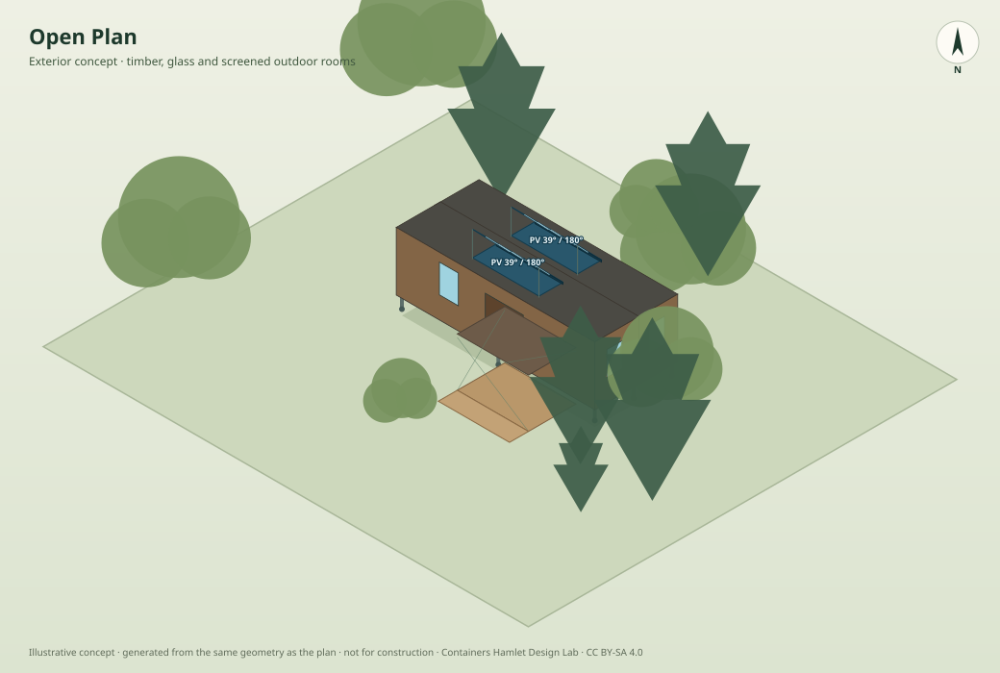
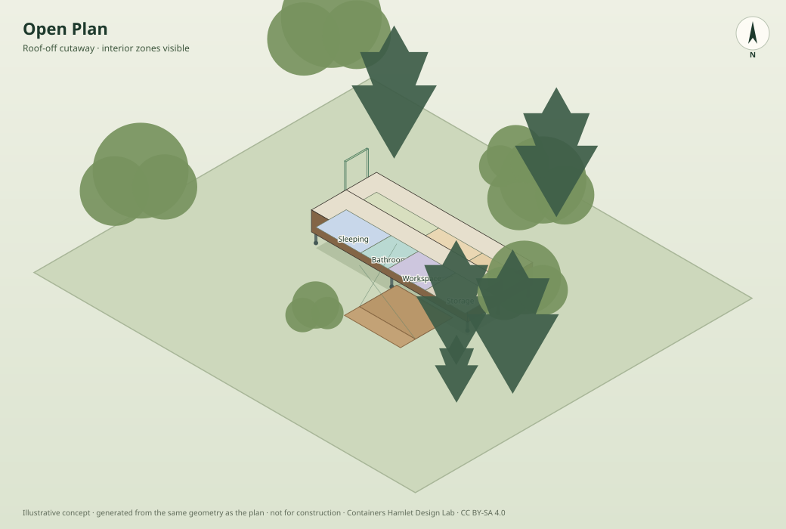
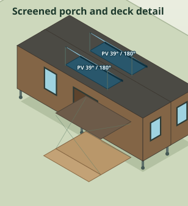
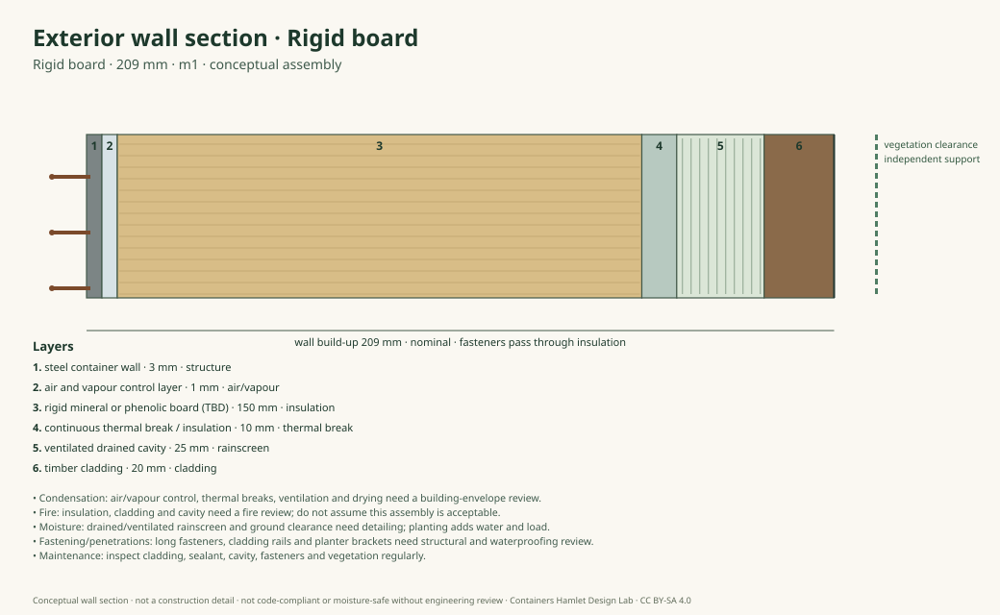

Architectural gallery · Two containers
Open Plan
Two 40-foot containers sit side by side, with a large structural opening between them to create a wider living space. Sleeping, bath and work occupy the quieter side.
Concept only; this design is not editable in the current editor.





Summer and winter
Both views use the same building and vegetation geometry. Evergreen systems remain visible in winter; deciduous climbers and edible planting are shown as dormant. No energy, daylight or privacy score is calculated.
Approximate window exposure
| Side | Approximate glazing |
|---|---|
| north | 5.3 m² |
| east | 2.4 m² |
| south | 6.7 m² |
| west | 1.2 m² |
| Total | 15.6 m² |
Shading and seasonal notes
- External shading intent: fixed overhang and deciduous planting.
- Freestanding trellis on the west face: seasonal climber shading is not calculated.
Maintenance
- Trellis t1: prune, secure and inspect the independent frame.
Approximate window areas and qualitative screening only. No energy savings, daylight factor, privacy score or code compliance is calculated.
Envelope assembly
rigid-board · version 1.0. The diagram is explanatory, not a construction detail; it is not code-compliant or moisture-safe without engineering review.

Layers
- steel container wall — 3 mm (structure)
- air and vapour control layer — 1 mm (air/vapour)
- rigid mineral or phenolic board (TBD) — 150 mm (insulation)
- continuous thermal break / insulation — 10 mm (thermal break)
- ventilated drained cavity — 25 mm (rainscreen)
- timber cladding — 20 mm (cladding)
Condensation, fire, moisture, fastening, structural penetrations and maintenance all need project review. The designer does not claim this assembly is compliant or moisture-safe.
Foundation and ground
helical-piles · 0.6 m clearance · no compaction intent · independent decks: yes.

Elevated floor on engineered helical piles. Confirm soil, bedrock, frost uplift, corrosion, lateral capacity, slope stability and permit requirements before construction. Geotechnical, frost-uplift, corrosion, lateral, slope, permit and conservation-authority review are required. No fill, slab or compaction is the intent; the construction sequence still needs an arborist and erosion-control plan.
Solar tilt and azimuth
39° tilt · 180° azimuth · year-round strategy. True south; confirm magnetic declination, shading, snow shedding and structural fixing.

Ottawa reference: the year-round fixed range is 36–39° (SolarCalculator.CA reports 39° optimal), winter is about 60° and summer about 30°, facing true south within a few degrees. No energy production, snow-shedding, wind-uplift or code compliance is calculated.
Vegetation systems
- Freestanding trellis on the west face, 1.8 × 3.2 m; independent support; Trellis on the west end.
Planting is independently supported where practical. Fire, moisture, structural loads, irrigation, plant selection and maintenance require professional review. Compare the four vegetation systems.
Concept facts
- Containers
- 2 × 40ft + 40ft
- Nominal conditioned area
- 59.4 m² (modules plus glazed hall)
- Screened / covered outdoor
- 4.5 × 3 m screened
- Glazing intent
- 15.6 m² approximate glazed area
- Thermal envelope
- triple glazed, low-e, argon, thermally broken frames; 250 mm roof; 200 mm floor; HRV/ERV
- Accessibility
- Wider interior helps circulation, but the bathroom still needs an accessible layout.
- Structure
- Multiple modules and/or wall removals need structural engineering review.
Concept only. Not reviewed by an architect, engineer or building official. No construction, energy, code or cost claim.